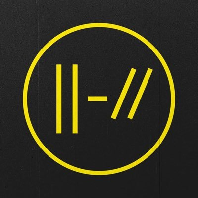

|
|
|
|
|||
Twenty One Pilots |
|||||

|
Era "RAB" |
Era "Blurryface" |
 | Era "Trench" |
|
|
Es el segundo álbum lanzado de forma independiente por el grupo musical estadounidense Twenty One Pilots, publicado el 8 de julio de 2011. |
Es el cuarto álbum de larga duración y segundo álbum de estudio del dúo musical estadounidense Twenty One Pilots, lanzado el 17 de mayo de 2015. |
Es el quinto álbum del dúo estadounidense Twenty One Pilots y el tercero como dúo. El álbum fue lanzado el 5 de octubre del 2018. |
|||